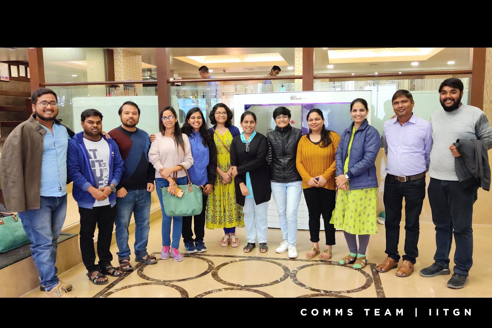
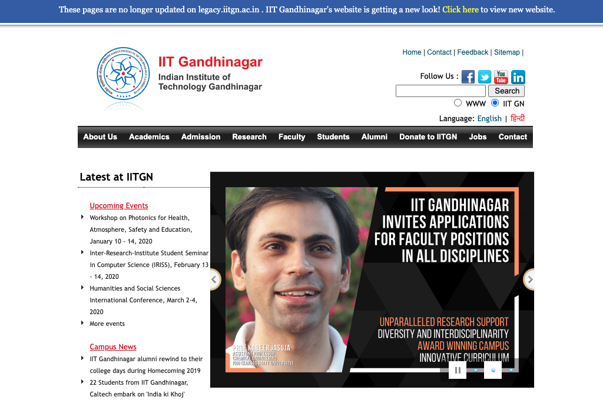
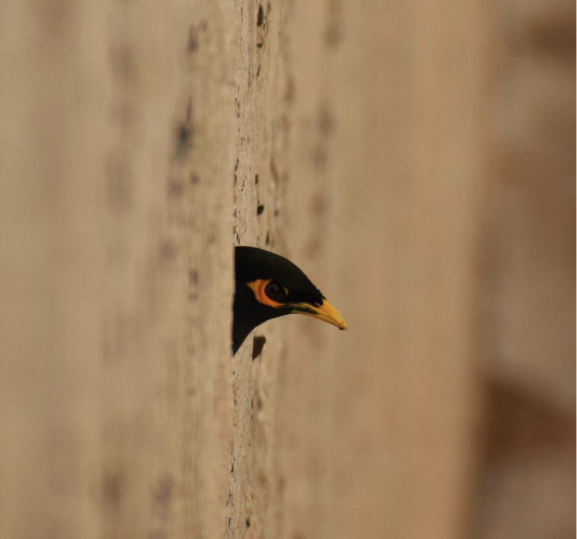

I finish seven years at IIT Gandhinagar today.
This year, I also concluded my stint with the Department of External Communications, which feels about as long. Indeed, little did I know that a casual remark that I had made during my interview1, about wanting to be a writer for as long as I can remember, was carefully noted — and magically my service responsibilities would end up being related to my childhood dream. A few days after I joined, I met Achal Mehra, who introduced me to Connections: a four-page newsletter that went places every quarter. In my mind, that conversation kickstarted my collaboration with what everyone fondly calls “comms”. Seven years later, I’m here to report that the journey has been fun and fulfilling in equal measure.
Through this post, I’d like to introduce you to the comms team: if you have been to IITGN for an event, read about us in the press, have recieved a newsletter from us, visited our website, or followed our social media: these are the folks who work behind the scenes on these fronts. Being a part of this gang has been a huge inspiration: everyone is talented but always willing to learn; their hard work is driven by a sense of ownership; and there’s plenty of wit to help beat the heat :)
Here’s collection of some randomly chosen memories: my hat-tip to a stellar team.

Hatim
Hatim joined us in the summer of 2018 and worked with us for four years. This summer, he moved on to join the design unit at ISDM as a Graphic Designer and Video Editor.
Hatim has had a creative flair from the get go. He’s been a part of several exciting projects, including being the person behind the visuals for Alok Kanungo’s book, Glass Crafts in Northern India. Also, here’s a cool trailer he put together very quickly for the ACM-W India Grad Cohort that I was involved in organizing in 2020.
Dilip
Dilip joined us in the summer of 2018. He had a distinct passion for developing mobile and web applications, and indeed, he’s been a huge asset to the web vertical of the team. He’s been relentless in learning new things and has been writing on Medium too.
When we were organizing the ACM-India Annual event and the team was freaking out over having upwards of 1000 registrations, Dilip wrote a mobile app for us — literally overnight — which allowed us to send all participants a QR code that they simply had to show to get through physical registration. It saved us a ton of time. You can find out more about Dilip here.
Tej
Tej joined us in the winter of 2016 as a web developer and has been my officemate. Tej is among the first points of contact for all new faculty at IITGN: their institutional profile pages are set up even before they actually set foot on campus. Tej’s name is synonymous with “website”. If anyone needs one done, whether it’s for their lab, or an event, he’s always been an email away. True to an appropriate mispronouciation of his name2, Tej has remarkable turnaround times, and seems to get things done as fast as you can spell them out.
One of my most memorable projects with Tej (along with Dilip, Divyangi, and the rest of the team) is the revamp of the main IITGN website. We went from this:

to this:

in about a year. Despite several very well-intended warnings about how crazy this was, the team picked up the project with cautious courage, and pulled it off. I think I can say with some confidence that the IITGN website is easy on the eyes, and things are not hard to find.
Apeksha
Apeksha joined us in the summer of 2019, just on the heels of completing her MTech in Biological Engineering at IITGN, and stayed with the team for a year. At the time of joining, she was an avid consumer of popular science material, and aspired to make the research at IITGN more broady accessible with her writing. She was a freelance writer already, and was looking for an opportunity to spend some time writing full-time. Her stint with us resulted in a number of articles, and her growth during the time has been remarkable. You can find her writing on her Medium blog.
The ACM-W India Grad Cohort event we did in 2020 was a virtual one, and in the tradition of Grad Cohorts, was not recorded. I am grateful that Apeksha stepped up at the time, offered to attend all the sessions, and wrote up comprehensive summaries.
She has now joined the Ph.D. program in the Humanities and Social Sciences and is currently researching cognitive aspects of science communication with Frederick Coolidge.
Dhara
Dhara joined us in the summer of 2018, and immediately got to work on managing our social media channels. She also streamlined the process of collecting information: a lot of what we do revolves around robust archival, and IITGN being a happening place does not make this easy! We get dozens of emails every day announcing events of varying scales, updates of various kinds.
Anticipating that the volume would only get worse, we devised a system for manually cataloging every bit of news in a bunch of Airtable bases. The long-term vision was that the Airtable API exposes this data to anyone who needs it: the web team could draw from it and filter appropriately to display upcoming events, an archival team could write a report generating app that used this as the backend, and so forth. We even had a web app developed by a team of undergraduates that pulled data from these bases to show off upcoming events on a big screen.
Dhara now manually curates information from these databases and runs a weekly internal newsletter collating what’s happened and what’s coming up at IITGN: this has been a major value addition for many. She also serves up the raw data needed for our public quarterly newsletter and annual reports based on this system, which saves everyone a lot of time. Apart from all of this, she is in the driver’s seat for all our major social media channels, and then some… and magically manages to stay on top of everything. You can find her writing on Medium.
Divyangi
Divyangi joined us in the summer of 2018 and worked with us for three years until the summer of 2021. She was a wizard when it came to scripting for automating tasks, and quickly became the go-to person for departments who were looking to improve their workflows.
IITGN runs on the Google ecosystem. Divyangi figured out several nice ways of bringing data from spreadsheets to frontends, generating reports, and so forth. She even ran a workshop on Google scripts and related tools as a part of an initiative coordinated by our Staff Development Cell.
Among the many projects Divyangi was involved in, one of my favorites was the backend for our rather popular Summer Research Internship Program. The website is powered by WordPress, and provides various interfaces for both interns and mentors to keep track of their applications during the application phase (this runs into tens of thousands of records), and progress during the internship (updates from interns and feedback from mentors are all managed from here). Divyangi, together with Dilip, deeply customized the WordPress instance to provide a number of features that help with running a large-scale program smoothly, with most of the tedious tasks completely automated.
Chandni
Chandni joined us in the summer of 2019 for a year. She was already a very talented photographer at the time of joining us. As our events and activities grew in number and scale, we found very valuable support in Chandni’s presence. Check out her Instagram here!

Vandana
Vandana joined us in the summer of 2017 in the role of a Communications and Media Officer for a year. During this time, she was working closely with local press and media, and ensuring that our stories are filed with them on a regular basis.
Vandana was already passionate about writing and had a keen eye for detail. She filled an important void at the time she joined and immediately setup various important foundations in the context of this role. She expanded our style guide, made a press kit, and developed a starting database of journalists that we could work with: these are all tools that the whole content team uses regularly to this day.
Her spirit of volunteerism meant that a lot of our content got reviewed and improved across the board: on the website, on our brochures, and so forth. This was also the time when we launched what I think is our best-kept secret: IITGN’s news blog. Vandana, along with the rest of the team, setup a careful pipeline to ensure that everything we capture across press and social media gets a permanent home on the blog. She continues to pitch in remotely, even after moving on from her onsite role with us on campus.
Shivangi
Shivangi joined us in the summer of 2018 in the role of a Communications and Media Officer, picking up from where Vandana left off. She has been synonymous with media and press at IITGN, and is currently our main interface with the press. She has substantially expanded on our network of partners in press, and ensures that we have the visibility we deserve in the local and national news, and even beyond. She is especially diligent about ensuring that regionally-focused news is appropriately translated in the local languages whenever appropriate, a widely appreciated effort.
Shivangi’s style has been remarkably proactive: if anything at IITGN is newsworthy, she makes sure it’s covered. She draws on her substantial experience in the field to bring nuanced insights to the table, and these have served us very well in our overall communications and outreach strategy.
Beyond coordinating stories for the press, Shivangi also comprehensively tracks IITGN’s presence in the news and other public domains, is closely invovled in the production of the quarterly newsletter and annual reports, and our social media activities as well. Shivangi is, unsurprisingly, an amazing writer, and here’s a performance of hers in a SDC event that was among my favorites.
Gaurav
Gaurav has been around for longer than I have, and he is a founding member of the team. He is among the most versatile people I know: not only does the scope of his work at IITGN go well beyond communications, even within communications his skills span a very wide range: he’s behind the camera, he’s the person behind the design and layouts for some of our best print collaterals, he’s directed and produced a number of videos, and I could go on and on.
I’ve freely relied on his mentorship: much of the growth that has happened within the team, especially in terms of creative efforts, is thanks to Gaurav’s experience and guidance.
If you pick up any of our booklets, there’s a good chance that Gaurav has been involved in engineering the layout and design. Among them, I’ll single out a couple for you to sample: the World Class Faculty brochure looks especially lovely in print, and the 10 on 10 brochure has a bold aesthetic that was a crowd favorite when it was released for our 10-year celebration.
Devarsh
Devarsh joined us in the summer of 2017, with a background in creative film-making and theatre. He quickly became the go-to person when it came to anything to do with video or photography. Over the years here, he’s grown leaps and bounds in his craft and understanding of all aspects of the process — both work that happens on the field and in post.
Our YouTube presence was in its nascent stages when Devarsh joined. He’s single-handedly worked on our channel in mission mode from the get go, and it is largely thanks to his efforts that we have a fairly systematic video respository of most major events and talks on campus.
Devarsh has been involved in several memorable projects. Here’s a video that he shot for our first virtual convocation, which also happened to be among the first virtual convocation events to be held in India (as far as we know).
Nostalgia
Some of the early members of the team are not pictured. Apart from everyone above, I had the good fortune to have worked with: Ritu (among other things, was the curator for all the early editions of the quarterly newsletter, Connections, and our annual reports), Dayanand (our first communications and media officer), Maria (our first social media intern), and Khushbu (who took over from Maria and preceded Dhara on managing social media).
It would be remiss of me to not give a shout out to the faculty support we have enjoyed over the years. Several colleagues have played major roles in helping out on all aspects of our responsbilities. A special thanks to Achal Mehra, who brought extensive experience to the table, and has been forever generous with his time and advice, and Vasco Trigo, whose inputs for the whole team were extremely timely and valuable.
I’ll also take this opportunity to thank friends at the Communications department at Duke University — they hosted us in the very early days, and their detailed and candid tour of various operational aspects was massively helpful in setting up a lot of the foundations back here.
I walked into this gig more or less by accident. I should confess here that I didn’t have a 5-year vision from which I could work backwards to nicely chunked milestones. There were no OKRs or KPIs or whatever else the pros do. A few times, it’s occurred to us that we should have targets, strategies, and systems3. While we never articulated any as far as I can remember, I think we did have a tacitly shared goal: it was to ensure that everyone got what they needed from comms, and that we didn’t make any mistake twice. My biases notwithstanding, I would say we have largely succeded :)
My time with this team remains special forever.
Footnotes
This was during the summer of 2015, with Prof. Sudhir Jain.↩︎
Tez = fast in Hindi↩︎
Most people at IITGN know by now that ambushing me in a corridor is more effective than email, and meanwhile, the team gets things done by some magic that remains a mystery to me.↩︎